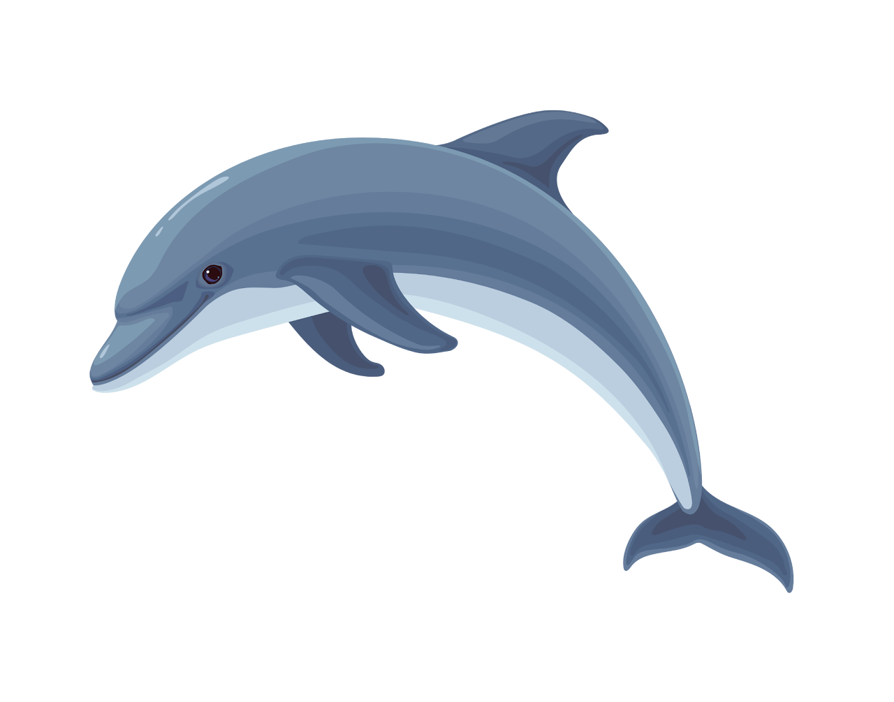
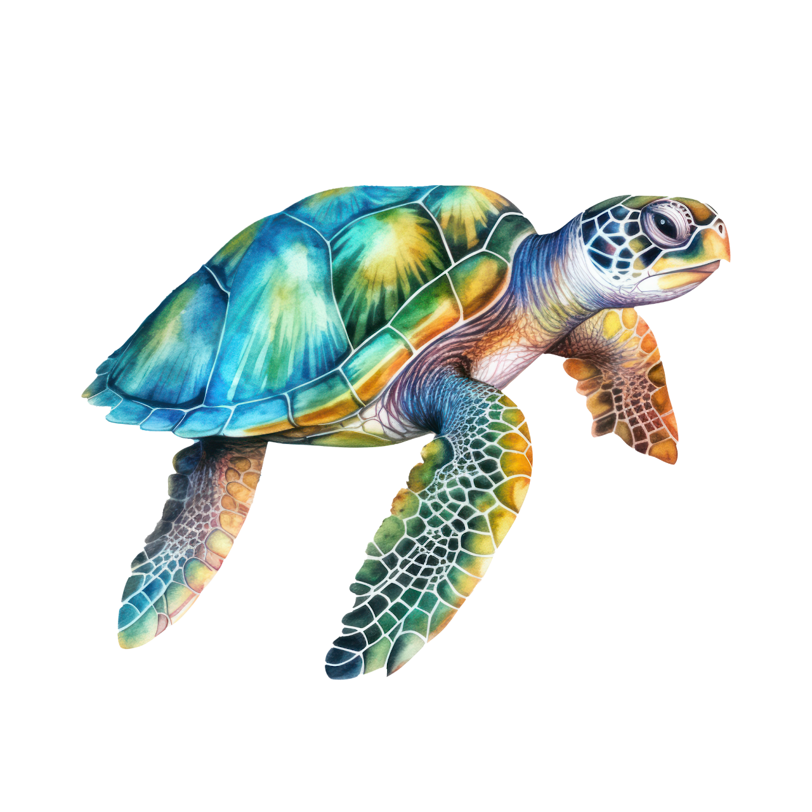
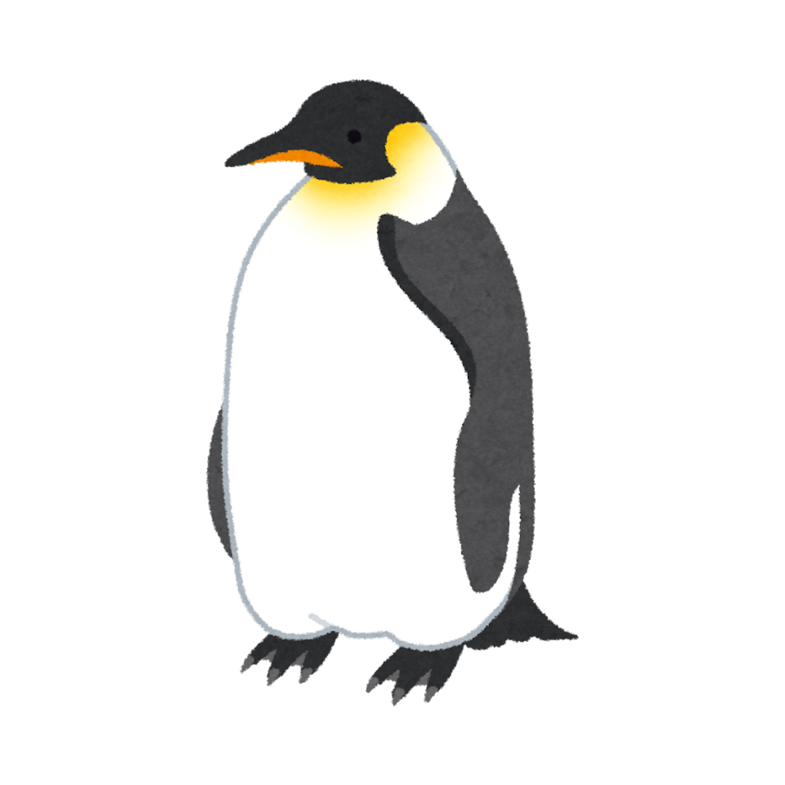
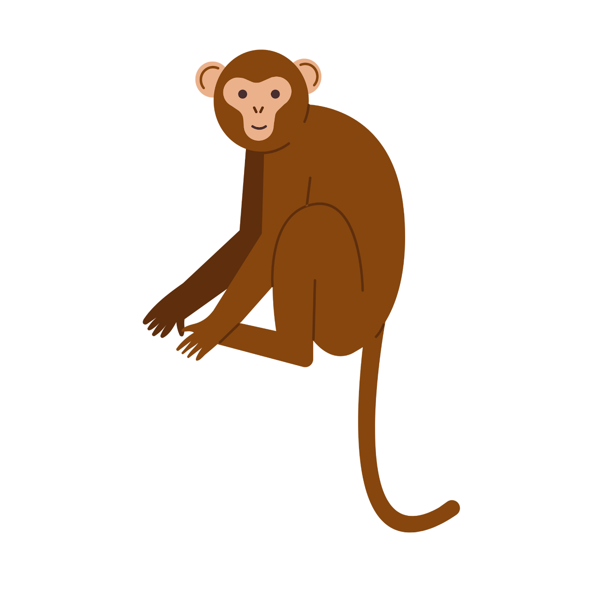
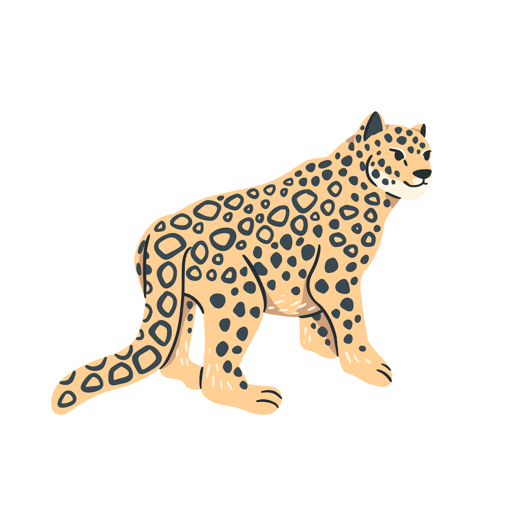
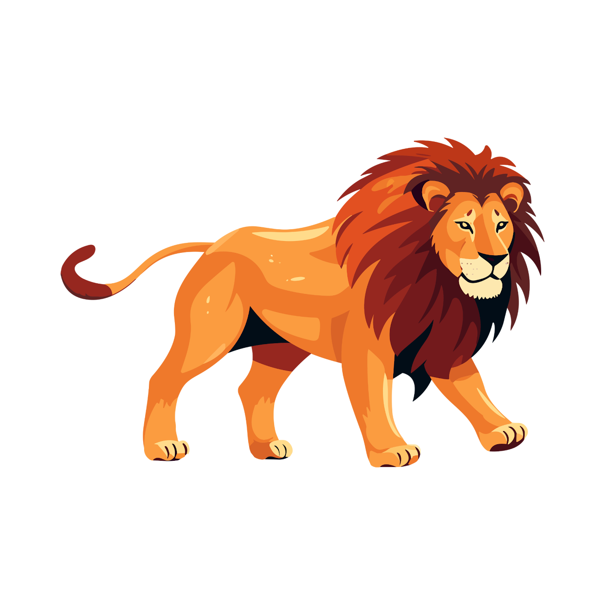
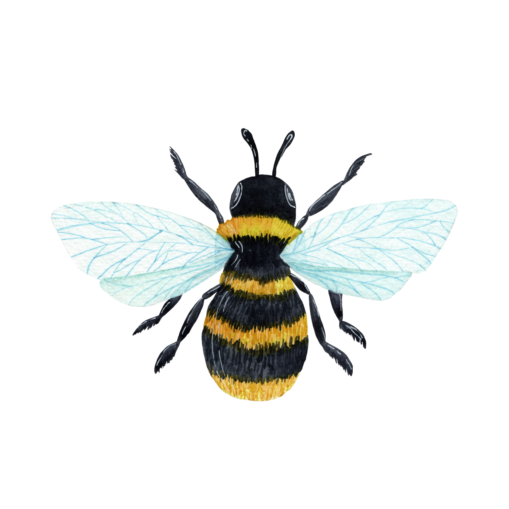

The roots of self-leadership.
品格教育的根基。
←Back to Lessons回到課程總覽Hsinyi's self-leadership curriculum introduces students to the Seven Habits — the character foundation behind every confident, capable leader. Each habit is paired with an animal that lives it out in nature, making abstract ideas easy to picture and remember.
信義的自我領導力課程，帶領同學認識七個好習慣——這是每個自信、有能力的領導者背後的品格根基。每個習慣都搭配一種在大自然中實踐這個習慣的動物，讓抽象的觀念變得具體好記。

Dolphins love to explore new things — curious, quick to learn, and easy to train. Being proactive means taking the first step and owning your choices, just like a dolphin diving into the unknown.海豚喜歡探索新事物，好奇心重、學習能力強，可以接受訓練。主動積極負責任，就是像海豚一樣，願意主動跨出第一步，為自己的選擇負責。

Sea turtles are great travelers. Years after leaving as hatchlings, adults swim hundreds or even thousands of kilometers back to the very beach where they were born, just to lay their eggs there. Beginning with the end in mind means knowing your destination before you start the journey.海龜具有遷移的特性，成年之後每隔幾年，會從棲息地游回距離幾百、幾千公里外的出生地，在沙灘上產卵、繁衍下一代。以終為始，就是像海龜一樣，出發前先想清楚自己要去哪裡。

Penguins can travel far from home to forage, storing food in their large stomachs before swimming all the way back to feed their babies first. Putting first things first means finishing what matters most before anything else.企鵝可以到離家很遠的地方覓食，把食物存放進牠們的大胃裡，再游回家，優先餵飽自己的寶寶。要事第一，就是像企鵝一樣，先完成最重要的事，再做其他的事。

Monkeys are highly social animals that live in family groups, caring for one another, defending against threats together, and learning by watching each other. Thinking win-win means looking for outcomes where everyone benefits, the way a troop of monkeys looks out for the whole group.猴子是群聚且高度社會性的動物，有家庭組織與親代照顧的習性，彼此間互動頻繁、共同防禦外敵，並且會互相模仿學習。雙贏思維，就是像猴群一樣，重視彼此、尋找對大家都好的結果。

Leopards blend into their surroundings, staying hidden until their prey doesn't notice them — then they choose exactly the right moment to act. Seeking first to understand means listening carefully before speaking, so you know the right moment to respond.花豹會埋伏在環境中，把自己隱藏起來，讓獵物沒辦法注意到牠，然後選擇在正確的時機出擊。知彼解己，就是像花豹一樣，先仔細聆聽、了解，再開口說話。

Lions hunt as a team, moving together as one group. When the prey is large, the males help the females hunt it down together. Synergizing means combining everyone's strengths to achieve something bigger than any one of you could alone.獅子懂得團隊合作，會結盟成一個群體共同行動，一起尋找獵物、覓食；獵捕體型較大的獵物時，公獅會協助母獅一同捕獵。統合綜效，就是像獅群一樣，結合彼此的力量，完成一個人做不到的事。

Bees collect nectar every day, storing it in the hive to make honey — and along the way, they pollinate countless plants, helping life continue all around them. Sharpening the saw means taking care of yourself daily, so you can keep growing and giving back.蜜蜂每天不斷地採集花蜜，把它儲存在蜂箱裡，釀成蜂蜜；在採集花蜜的過程中，也順道幫助許多植物授粉，延續生命。不斷更新，就是像蜜蜂一樣，每天照顧好自己，才能持續成長、對世界有貢獻。